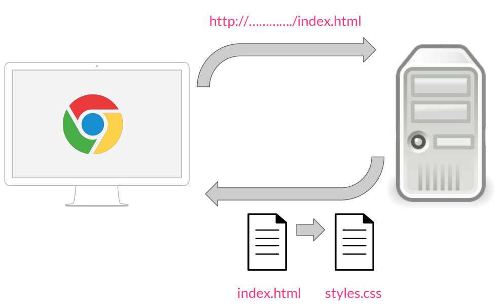

Fundamentos de CSS
Definición de CSS
CSS significa Cascading Stylesheets (hojas de estilo en cascada). Es un lenguaje para crear reglas que puedan selecionar varios elementos en la página y cambiar sus propiedades visuales.Una definición más formal de CSS sería la siguiente que aparece en Wikipedia: CSS es un lenguaje de diseño gráfico que permite definir y crear la presentación de un documento estructurado escrito en un lenguaje de marcado. Es muy usado para establecer el diseño visual de los documentos web e interfaces de usuario escritas en HTML. En la propia definición de CSS vemos que está muy ligado desde su nacimiento a HTML. Desde que nació, el objetivo de CSS fue poner un poco de orden a la hora de aplicar los estilos a las páginas web.
Funcionamiento
Veremos un pequeño esquema qué es lo que sucede desde que se solicita una página web hasta que se le aplica el estilo. El proceso es el siguiente:
Cuando desde un navegador, por ejemplo Chrome, solicitamos una página a través de una dirección, por ejemplo http://..../index.html, esta petición va a un servidor web, que nos devuelve la página que se ha solicitado. Para aplicar estilos en las páginas HTML, se utiliza un fichero aparte, una hoja de estilos con la extensión .css, por lo que cuando estos dos documentos llegan al navegador, va a leer el documento HTML, le aplica los estilos CSS y lo muestra.
Ejemplo de como se veria una pagina con CSS y sin usar CSS

Referencia bibliografica